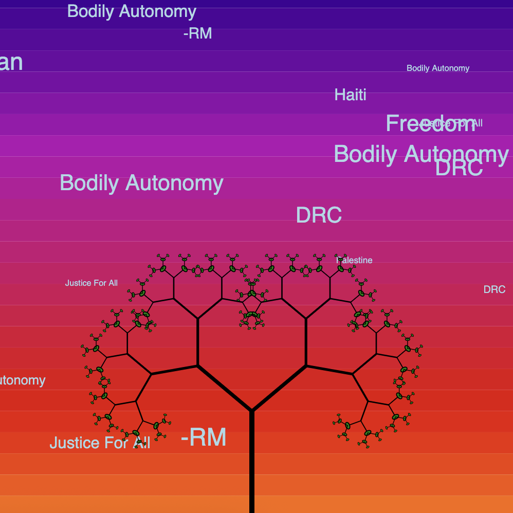
Rebecca - Never Truly Invisible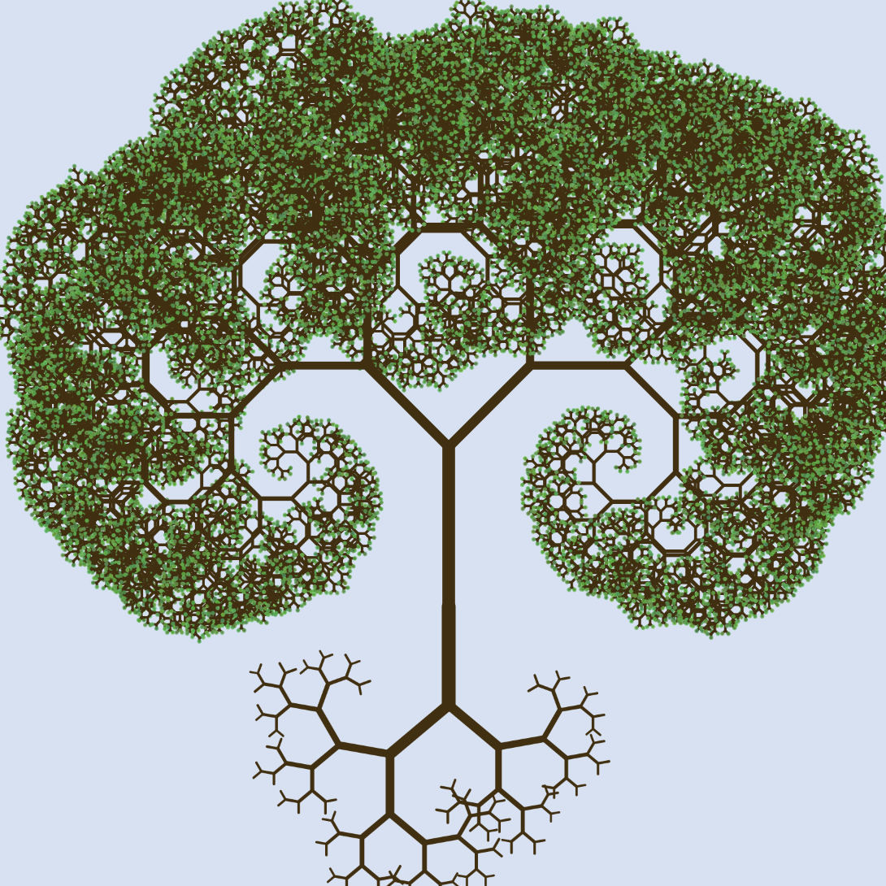
Cyprean - I am so “Moved” by You [the Mouse]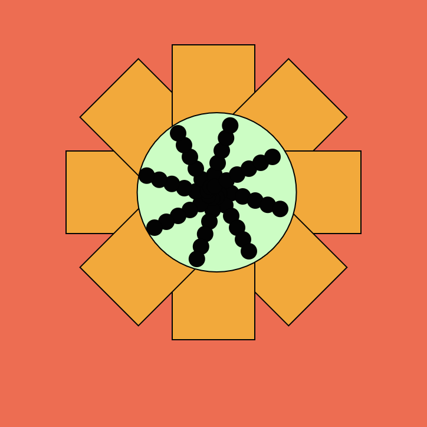
Duygu - Flower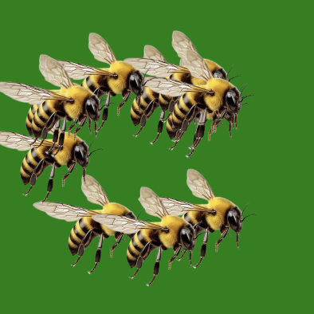
Duygu - Bees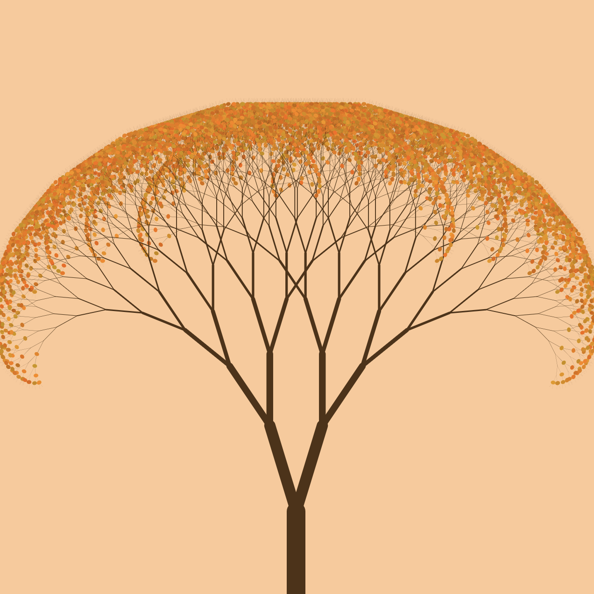
Duygu - Seasonal cycle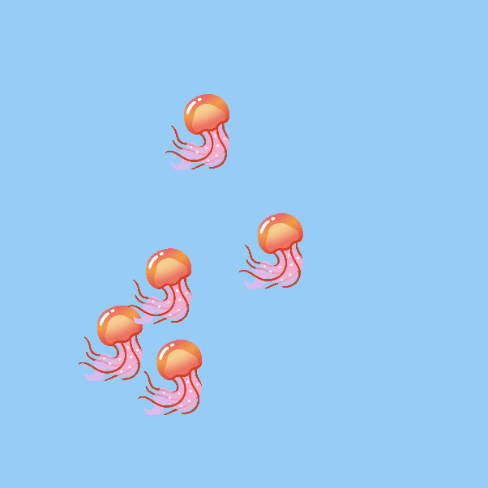
Khwezi - Jellyfish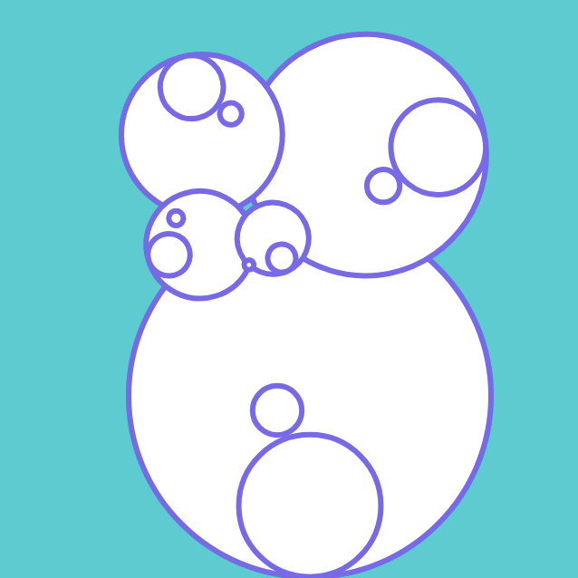
Khwezi - Appallonian Basket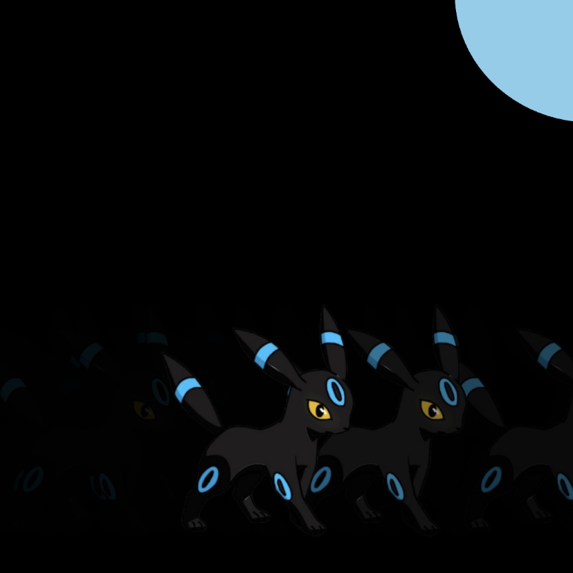
Lawrence - LCH - Umbreon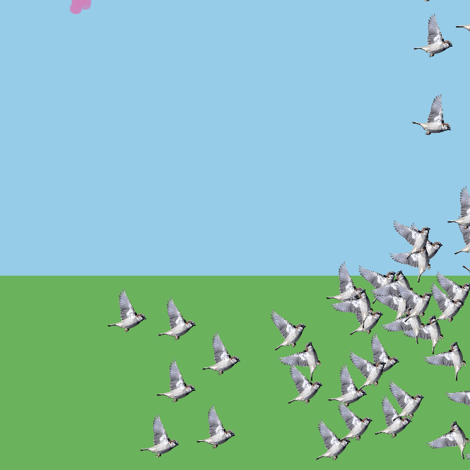
Lawrence - LCH - Beautiful Windy Day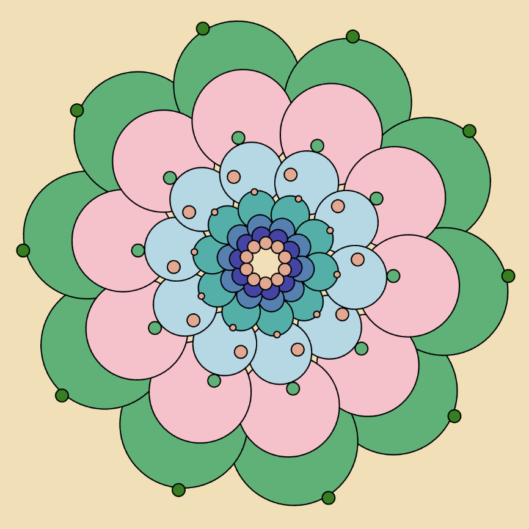
Lorena - Flower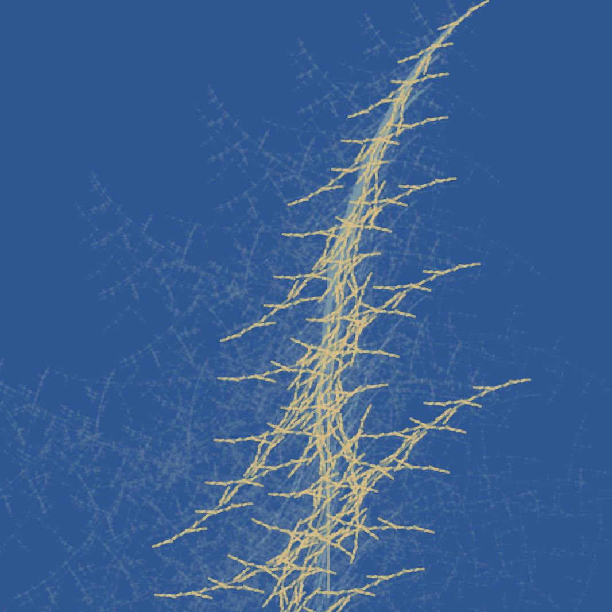
Lorena - Wheat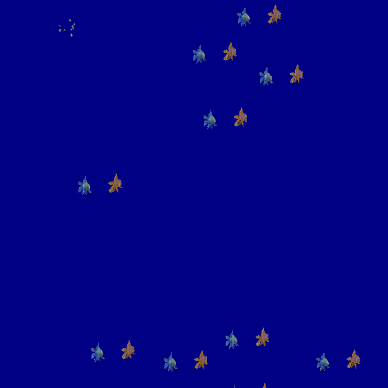
Lorena - Chill *TAP *TAP* surprise!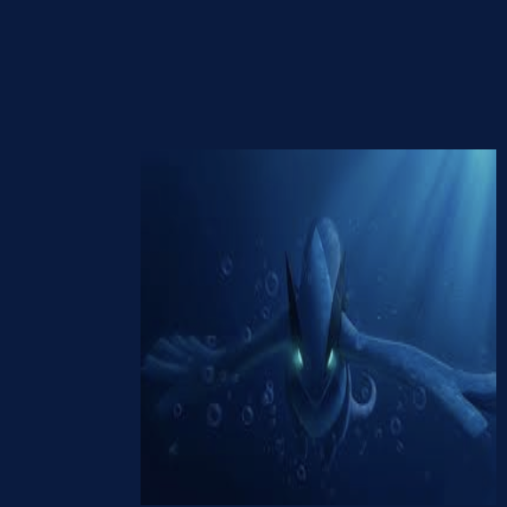
Josue - Bouncing Lugia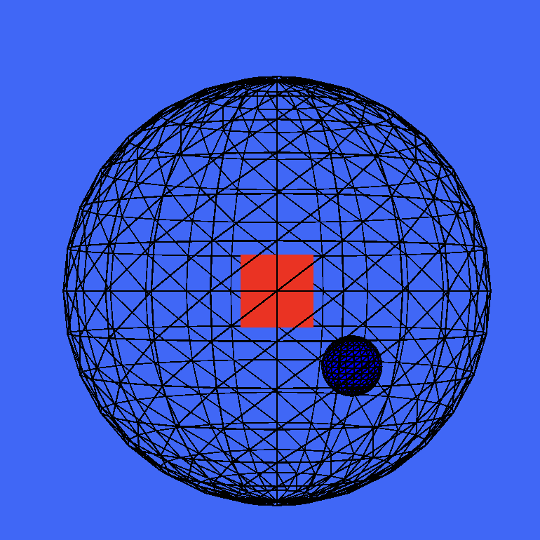
Josue - Dimma Dome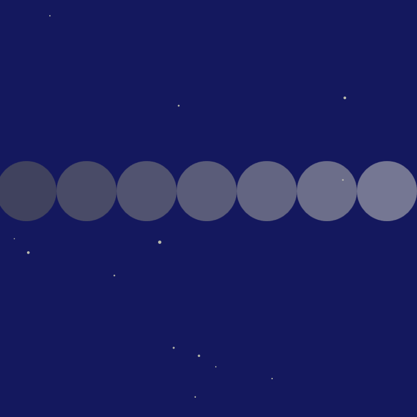
Josue - The Ever Moving Timeline Tanisha - Bird
Tanisha - Bird